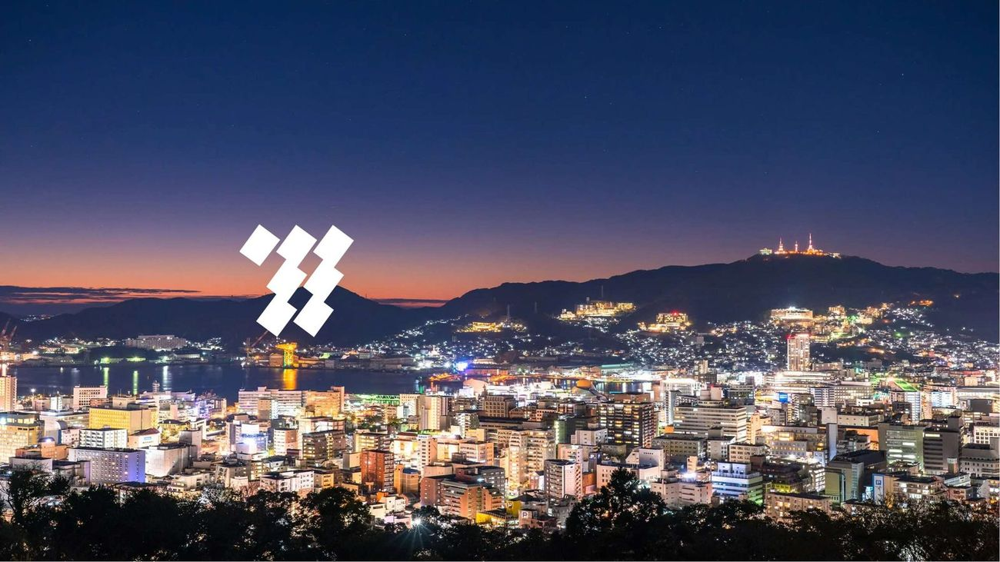

01表紙

九州電力
02目次
目次
01
会社概要
02
他社との違い
03
地熱発電
04
バイオマス
05
太陽光
06
九州の産業との関係
07
クイズ
03Contents

Contents
01
会社概要
02
他社との違い
03
地熱発電
04
バイオマス
05
太陽光
06
産業との関係
07
クイズ
04中扉 ― 会社概要
会社概要
05会社概要
会社概要

設立
1951年5月1日

総販売電力量
983億kWh（全国4位）

持株会社化
2026年10月 純粋持株会社体制へ移行

資本金
2,373億円

06中扉 ― 他社との違い
他社との違い
環境へのやさしさ
07他社との比較
他社との比較
非化石電源の割合がトップ！
安定で環境 にやさしい
九州
65.0%
関西
51.6%
北陸
36.0%
全国平均
33.4%
東京
15.0%
再エネ
原子力
30%
45%
60%
80%

08中扉 ― 地熱発電
地熱発電
地球の熱を、暮らしの熱に
09地熱発電 ― メリットとデメリット
地熱発電
日本の地熱資源量
世界第3位
（2300万kW）
国内地熱設備容量に占める割合
約4割
主要各社の設備容量
九州21.1万kW
東北15.3万kW
北海道2.5万kW
メリット
・安定して発電できる
天候や昼夜に左右されにくく、 設備利用率は83％と試算されて いる。
・CO2排出量が少ない
ライフサイクルCO2排出量は 約13g-CO2/kWhと非常に低い水準。
・地域で有効利用できる
熱水や排熱をハウス栽培・養殖 ・暖房などに活用できる。
デメリット
・開発に長期間かかる
調査・掘削・環境アセスメント が必要で、稼働まで10年以上か かる場合がある。
・温泉地との調整
温泉地に多く存在し、地域との 合意形成が重要。
・出力低下の可能性
蒸気・熱水の変化により発電量が 低下する場合があり、継続的な 管理が必要。
10地熱発電のバイナリー方式
地熱発電のバイナリー方式
重要語句：バイナリー発電
約70～150℃の比較的低温な温泉や熱水を 使い、水より沸点の低い媒体（アンモニア） を温め、その蒸気でタービンを回して 発電する仕組み。
九州電力の八丁原バイナリー発電所は、 日本初の事業用地熱バイナリー発電所です。

11中扉 ― バイオマス発電
バイオマス発電
無駄にしない
12バイオマス発電 ― 設備容量
バイオマス発電

バイオマス設備容量
九州電力 グループ
53.2万kW
北陸電力 グループ
11.2万kW
中国電力 グループ
11.2万kW
中部電力
4.9万kW
九州は林業が盛んな地域で、素材生産量は全国の約4分の1を占めている。 そのため、間伐材や林地残材などの木材資源をバイオマス燃料として活用 しやすいという特徴がある。
13バイオマス発電の混焼
バイオマス発電の混焼

重要語句：バイオマス混焼
石炭などの化石燃料に、バイオマス（木くずと いった有機資源）を混ぜて一緒に燃やし、発電 を行う方法。 同量の発電を行うために必要な石炭の使用量を 減らすことができるため、 「エネルギーの使用の合理化」につながる
石炭


バイオマス
（木材）
14中扉 ― 太陽光発電
太陽光発電
降り注ぐ恵
15日照時間と太陽光発電の割合
日照時間と太陽光発電の割合
年間電力に対する太陽光発電の割合
九州
16.2%
東北
13.5%
関西
6.7%
北陸
5.8%
日照時間
宮崎
5.8時間/日
東京
5.3時間/日
秋田
4.2時間/日

宮崎は秋田より年間約594時間多く、 1日平均では約1.6時間長い。 また積雪による太陽光発電量の低下も少ない。
16太陽光発電 出力制限
太陽光発電 出力制限
重要語句：出力制限
電気を使う量と発電する量を合わ せるために、発電する量をコント ロールすること。 晴れた昼間などは太陽光発電が増 えすぎて電気が余ることがある。 九州では太陽光発電が多いため、 出力制御が行われることがある。
優先給電ルール（出力制御の優先順位）
火力の制御、揚水・蓄電池の活用
他地域への送電（地域間連系線）
バイオマスの出力制御
太陽光、風力の出力制御
長期固定電源の出力制御
17中扉 ― 産業との関係
産業との関係
企業の誘致
18産業との関係
産業との関係
現在
九州では半導体工場などの建設が進み、電力需要の増加が見込まれている。 九州電力は発電するだけでなく、地域の産業発展を支える役割も持つ。
求められる立地条件
半導体工場は大量の電気を24時間必要とするため、 「大規模な電力需要に対応できる地域」
＋
「安定した電力系統が整っている地域」が 求められる。
九州の強み
世界企業は製造時のCO2排出量削減も重視して おり、非化石電源が多い九州は産業立地上の 強みになる。
企業が集まる


電力需要 が増える

電力インフラ を強化

さらに企業が 進出しやすくなる
生まれる 好循環
19中扉 ― クイズ
クイズ
３問
20クイズ 1
問題：九州電力の電源構成における「非化石電源」の合計比率はどれ？
【A】
65.0%
【B】
51.6%
【C】
33.4%
【D】
15.0%
正解は「A」
21クイズ 2
問題：地熱発電の「バイナリー発電」で温泉の熱水を温めるのに使われる媒体はどれ？
【A】
アンモニア
【B】
水素
【C】
窒素
【D】
二酸化炭素
正解は「A」
22クイズ 3
問題：「優先給電ルール」で最初に出力制御の対象となる電源はどれ？
【A】
火力（石油・ガス・石炭）
【B】
太陽光・風力
【C】
バイオマス
【D】
水力・原子力・地熱
正解は「A」